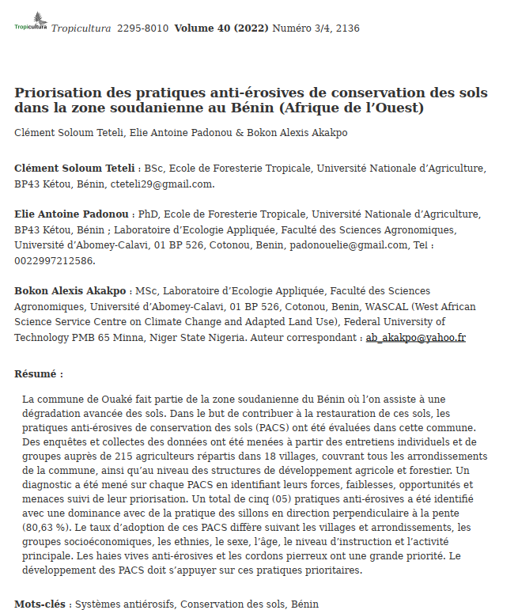

Prioritization of soil conservation antierosion practices in the common Sudanian zone in Benin (West Africa)
Abstract
Soil erosion is a major constraint to agricultural productivity in West Africa's Sudanian zone. This study aimed to identify and prioritize soil conservation antierosion practices (SCAPs) in the Sudanian zone of Benin (West Africa), using a multi-criteria analysis approach (Analytic Hierarchy Process – AHP) integrating biophysical effectiveness, socio-economic feasibility, and adoption rate by local farmers.
Data were collected through structured interviews with 180 farmers in three municipalities (Banikoara, Kérou, and Ouaké). Twelve soil conservation practices were evaluated. Results showed that living hedges, grass strips, stone bunds (cordons pierreux), and zaï pits were ranked as the highest-priority practices. The study provides practical recommendations for targeted soil conservation strategies.
- Keywords: Soil erosion, antierosion practices, AHP, Sudanian zone, Benin, agroforestry, land degradation
- Study area: Banikoara, Kérou, Ouaké – Northern Benin (West Africa)
- Methods: Participatory surveys, Analytic Hierarchy Process (AHP), statistical analysis (SPSS, R)
- Sample: 180 farmers interviewed across 3 municipalities
- Main findings: Living hedges and grass strips ranked as top priority practices; stone bunds and zaï pits also highly recommended
